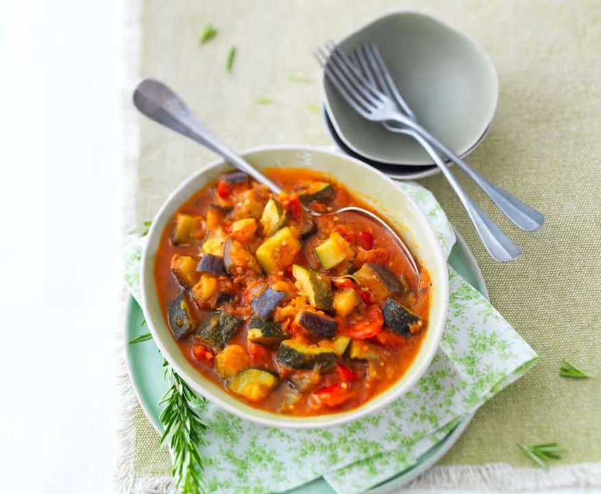

Ratatouille
Ingredients
4×
- 120 g d'oignons
- 2 gousses d'ail
- 20 g d'huile d'olive
- 300 g de tomates
- 100 g de poivron rouge
- 1 c. à s. d'herbes fraîches
- 1 c. à c. de sel
- 2 pincées de poivre
- 300 g d'aubergine
- 300 g de courgettes

Préparation
Étape 1
Mixer 120 g d'oignons, 2 gousses d'ail et 20 g d'huile d'olive 4 sec/vitesse 5. Rissoler 5 min/120ºC/sens inverse/vitesse mijotage.
Étape 2
Ajouter 300 g de tomates et 100 g de poivron rouge en morceaux, 1 c. à s. d'herbes fraîches (thym, romarin, basilic…), 1 c. à c. de sel et 2 pincées de poivre. Cuire 12 min/100ºC/sens inverse/vitesse mijotage.
Étape 3
Ajouter 300 g d'aubergine et 300 g de courgettes en morceaux (2-3 cm). Cuire 12 min/100ºC/sens inverse/vitesse mijotage.
Conseils
- Servir chaud ou froid, avec une viande, un poisson, des pâtes ou des oeufs durs.
- Saupoudrer de parmesan.